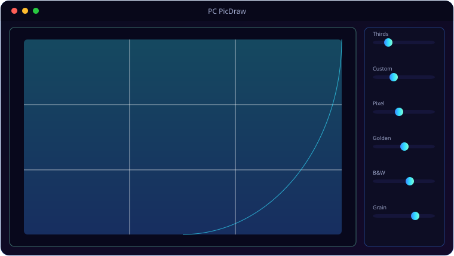

A look inside PC PicDraw.

Everything PC PicDraw brings to the table.
Four Grid Types
Rule of Thirds, Custom, Pixel and Golden-Ratio Fibonacci grids — with colour, opacity, thickness and a closed border rect.
Recursive Zoom Grids
Zoom in and nested sub-grid levels appear automatically, each hue-shifted so you always know which level you're on.
B&W Reference Passes
Convert to greyscale with presets plus brightness, contrast, R/G/B mix and grain sliders to read values clearly.
Custom Rotation & Area Lock
Free-angle rotation, drag-select an area to zoom into, align the image under a fixed grid, then lock the view.
Always-On-Top + Opacity
Pin the reference over your canvas and dial in window opacity — perfect for tracing-by-eye beside any drawing app.
Save a Gridded Copy
Bake the grid and effects into a saved copy in a PicDrawGrid subfolder.
System requirements.
Minimum
- OS: Windows 10 (64-bit) or Windows 11
- CPU: Dual-core, 2.0 GHz
- Memory: 4 GB RAM
- Graphics: Any DirectX 11 / integrated GPU
- Storage: 250 MB + space for your files
- Display: 1280×768 or higher
Recommended
- OS: Windows 11 (64-bit)
- CPU: Quad-core, 3.0 GHz
- Memory: 8 GB RAM
- Graphics: Dedicated GPU (optional)
- Storage: SSD with a few GB free
- Display: 1920×1080 or higher
The details.
| Grids | Rule of Thirds · Custom · Pixel · Golden Ratio (Fibonacci spiral) + closed border |
| B&W | Presets + brightness/contrast/RGB mix/grain |
| Transform | Free-angle rotation, area selection, align-to-grid, position lock |
| Window | Always-on-top, adjustable opacity, keyboard shortcuts |
| Platform | Windows 10 / 11 |
Get PC PicDraw.
Grid overlays and B&W references for drawing from photos.
⬇ Download PC PicDrawPC_PicDraw.exe · Free · no subscription · Windows 10/11